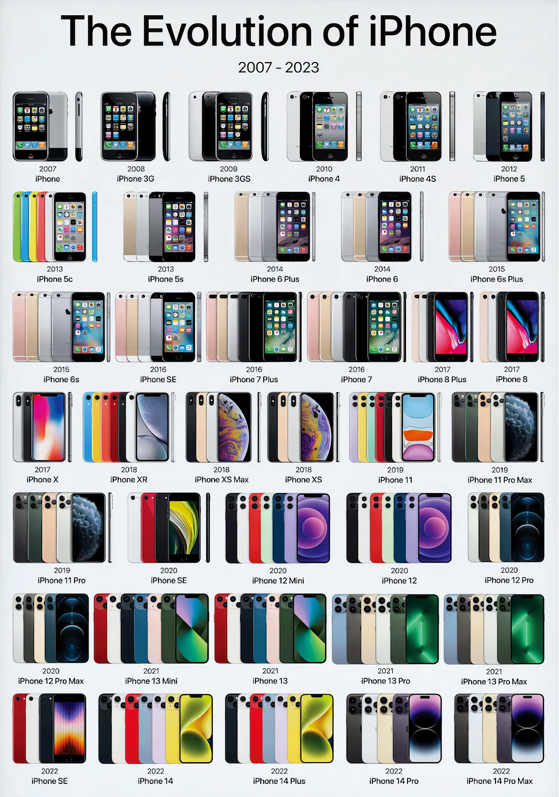

The Evolution of the iPhone
Discover the journey of Apple’s revolutionary device from 2007 to the present.
Introduction
The iPhone has become one of the most iconic devices in the world, reshaping the way we communicate, work, and live. It all started in 2007 when Steve Jobs introduced the first iPhone. This website takes you through the history and development of this groundbreaking product.